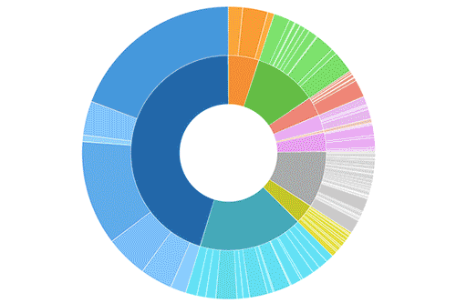
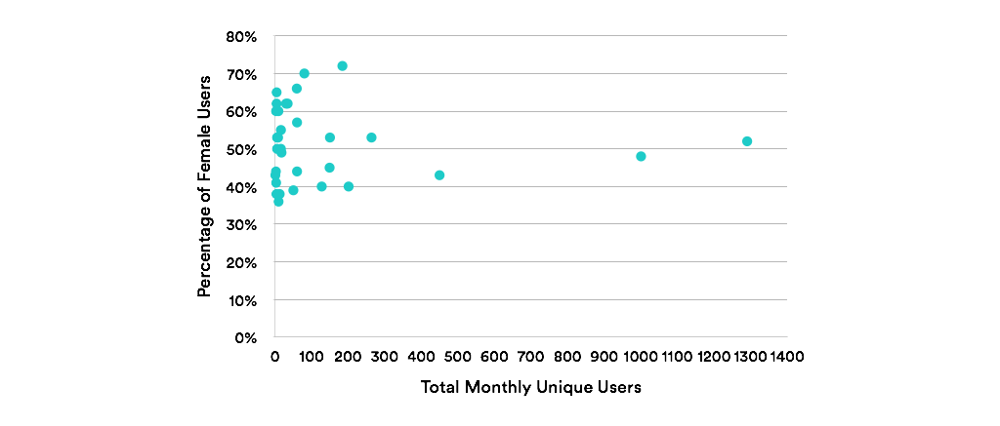
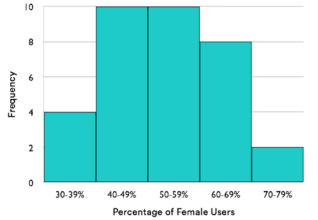
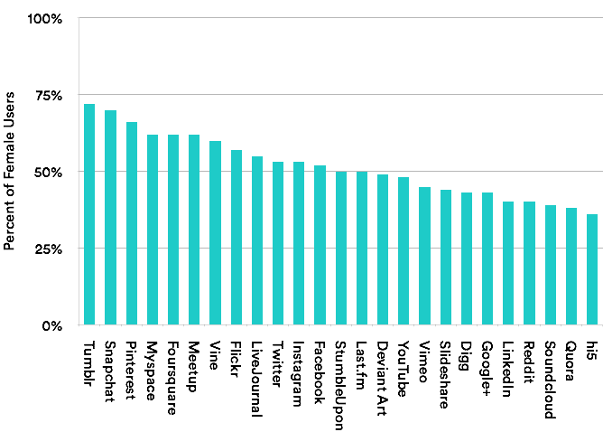

The data you collect is only as good as how well you can communicate its meaning.
This tutorial will help you choose the most useful chart.
Let’s work through an example.
Say we want to answer the question,
“What is the gender breakdown, in terms of total users, across social media networks?”
Here is our dataset for 25 major sites:
| Social Media Site | Female Users* | Male Users* | Monthly Unique Users* | Percentage Female Uses |
|---|---|---|---|---|
| 670.8 | 619.2 | 1290 | 52% | |
| YouTube | 480 | 520 | 1000 | 48% |
| Google+ | 193.285 | 256.215 | 449.5 | 43% |
| 139.655 | 123.845 | 263.5 | 53% | |
| 80.4 | 120.6 | 201 | 40% | |
| Tumblr | 132.48 | 51.52 | 184 | 72% |
| 79.5 | 70.5 | 150 | 53% | |
| Vimeo | 67.15493 | 81.84507 | 149 | 45% |
| 51 | 76.5 | 127.5 | 40% | |
| Snapchat | 56 | 24 | 80 | 70% |
| Flickr | 34.2 | 25.8 | 60 | 57% |
| Slideshare | 26.66667 | 33.33333 | 60 | 44% |
| 39.171 | 20.179 | 59.35 | 66% | |
| Soundcloud | 19.5 | 30.5 | 50 | 39% |
| Myspace | 21.266 | 13.034 | 34.3 | 62% |
| Foursquare | 18.6 | 11.4 | 30 | 62% |
| Deviant Art | 8.575 | 8.925 | 17.5 | 49% |
| LiveJournal | 8.8 | 7.2 | 16 | 55% |
| StumbleUpon | 7.9 | 7.9 | 15.8 | 50% |
| hi5 | 3.384 | 6.016 | 9.4 | 36% |
| Last.fm | 2.5 | 2.5 | 5 | 50% |
| Quora | 1.3148 | 2.1452 | 3.46 | 38% |
| Meetup | 1.86 | 1.14 | 3 | 62% |
| Vine | 1.38 | 0.92 | 2.3 | 60% |
| Digg | 0.26 | 0.34 | 0.6 | 43% |
*In Millions of Monthly Users
How do we decide which form of visualization will be most effective?
There are no definitive rules, but there are common use cases for each method that can guide us.
Let’s look at five of the most common types of charts analysts use:
Let’s look at five of the most common types of charts analysts use:
Let’s look at five of the most common types of charts analysts use:
Let’s look at five of the most common types of charts analysts use:
Using a line chart for our data wouldn't make sense.
The line of the chart implies that there is a continuum between data points.
But you couldn't create a scale from Facebook to YouTube – there are no values between those points of data.
Let’s look at five of the most common types of charts analysts use:
Let’s look at five of the most common types of charts analysts use:
Let’s look at five of the most common types of charts analysts use:
Let’s look at five of the most common types of charts analysts use:
We could use a pie chart to represent the user base of one site – as the number of male and female users add up to a meaningful whole.
We could use a pie chart to represent the user base of one site – as the number of male and female users add up to a meaningful whole.
However, it's very difficult to compare the size of multiple slices across pie charts.
You would need to read the percentages—you might as well use a table instead.
Let’s look at five of the most common types of charts analysts use:
Let’s look at five of the most common types of charts analysts use:
Let’s look at five of the most common types of charts analysts use:
Let’s look at five of the most common types of charts analysts use:
We're not looking for a relationship between our variables, so a scatter graph won't help us.
Let’s look at five of the most common types of charts analysts use:
Let’s look at five of the most common types of charts analysts use:
Let’s look at five of the most common types of charts analysts use:
Let’s look at five of the most common types of charts analysts use:
To create a histogram of our dataset, we’d need to group our data points by a percent range, for example.
This graph tells us that the most common percentage of women is 40-59%. Not a very useful insight.
Let’s look at five of the most common types of charts analysts use:
Let’s look at five of the most common types of charts analysts use:
Let’s look at five of the most common types of charts analysts use:
Let’s look at five of the most common types of charts analysts use:
Ultimately, the story that we’re telling is how data compares across categories.
And this story can best be illustrated by a bar chart:
Bar charts work by allowing the viewer to quickly assess the relationship between data points based on the lengths of the bars.
So if your chart looks like a city skyline, you need to sort your data.
Can you tell which social media channel has the largest percent of female users? What about the smallest?
Can you tell which social media channel has the largest percent of female users? What about the smallest?
Now we can clearly see that Tumblr has the largest proportion of women, while hi5 has the smallest.
Any chart that you have to struggle to read is not doing its job.
Any chart that you have to struggle to read is not doing its job.
To improve readability, we could rotate the access (give the labels some breathing room) and increase the white space between bars.
To further clarify which sites are dominated by men, by women, and which are equal, we could change the color of the bars.
To further clarify which sites are dominated by men, by women, and which are equal, we could change the color of the bars.
Now, at a glance, we can see which sites fall below or above a 50% female user base.